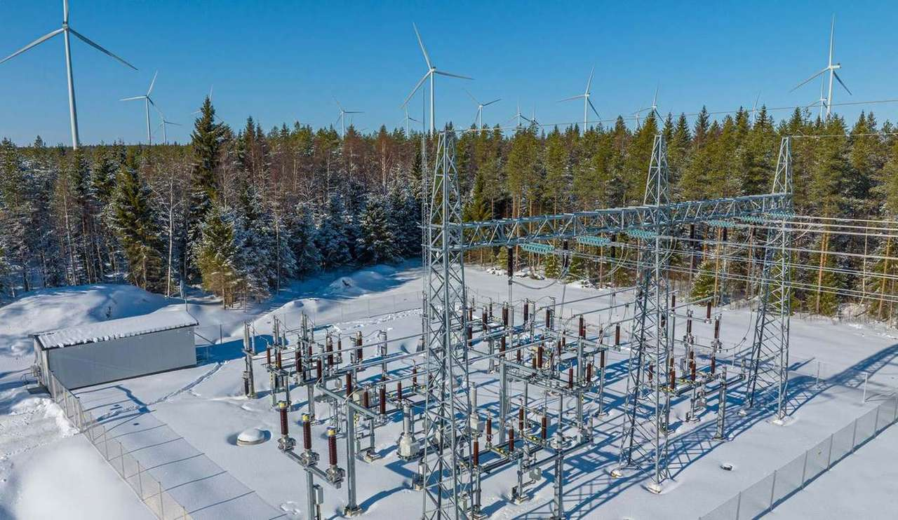
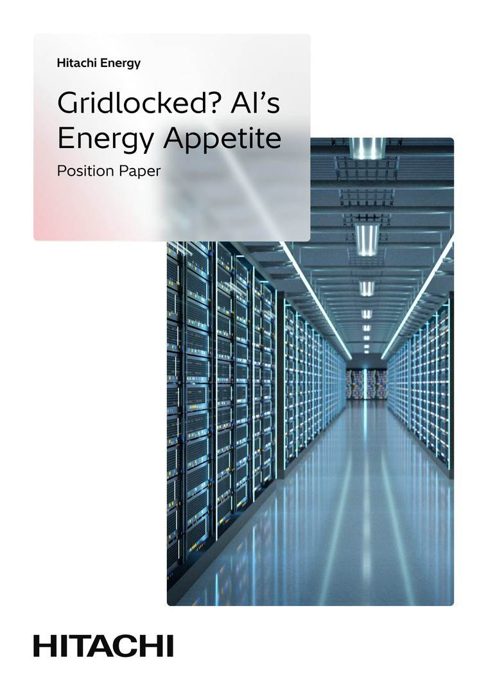

Por qué tu consulta a la IA acaba en una subestación
La próxima década de la inteligencia artificial no la decidirá el código. La decidirán el cobre, los transformadores y las líneas eléctricas que sostienen todo en silencio.
Vivimos una fiebre del oro digital, pero sus motores no funcionan con vapor. Funcionan con megavatios. Cada vez que pides a un modelo que redacte un correo, resuma un contrato o genere una imagen, llegas a una enorme red, casi invisible, de centros de datos que consumen energía a una escala que generaciones anteriores nunca imaginaron.
La historia de la IA casi siempre se cuenta en software. El verdadero límite es físico. Detrás de cada respuesta en tu pantalla hay una cadena de generación, transporte y transformación que tiene que responder al instante, cada vez.
La paradoja de la energía
La IA ha alcanzado un punto de inflexión cultural y, con él, uno físico: la computación crece más rápido que las redes que la alimentan. Los grandes operadores de la nube compiten por asegurarse contratos de compra de energía y construir subestaciones propias, porque el recurso escaso ya no es solo el talento o los chips. Es la electricidad fiable, limpia y disponible.
Esa es la paradoja de esta época. Para construir la tecnología más avanzada de la historia, primero hay que reconstruir la infraestructura más básica que hay debajo.

El cuello de botella no es el chip
Pregunta a un ingeniero por qué un nuevo centro de datos tarda meses en ponerse en marcha y rara vez empezará por el silicio. Empezará por la conexión: la cola para enchufarse a una red que nunca se diseñó para una demanda de escala de gigavatios, permanente y concentrada en un solo lugar. Los chips más rápidos ayudan a la eficiencia. No tienden una línea de transporte.
Aquí es donde la conversación sobre la IA choca de frente con la pregunta central de The Next 25: al mundo no le falta energía. Le falta la red para llevarla a donde, y cuando, se necesita.

Reconstruir la columna vertebral
La solución rara vez sale en los titulares. Son los enlaces HVDC que trasladan energía limpia entre continentes con pérdidas mínimas. Es el software de orquestación de red que equilibra oferta y demanda en tiempo real. Y es la disciplina de invertir antes que la demanda, construyendo capacidad antes de que la crisis la haga evidente para todos a la vez.
Es un trabajo esencial y poco vistoso que Hitachi Energy lleva décadas haciendo y que ahora está, de repente, en la ruta crítica de la tecnología más observada del planeta. Porque el software más inteligente del mundo no deja de ser un pisapapeles caro sin la energía para hacerlo funcionar.
Tres visiones desde dentro del problema

La visión del operador a hiperescala
Gestionar la huella energética de la IA a escala planetaria.

La visión del diseñador de chips
Sacar más capacidad de cálculo útil de cada vatio.
La visión del operador de red
Conectar gigavatios de nueva demanda sin romper el sistema.

¿Red bloqueada? El apetito energético de la IA
El análisis completo de dónde chocan energía, política y tecnología, y la hoja de ruta para construir la red que necesita la era de la IA. Toda la historia, para quienes quieren cada detalle.